LiveListenerBus: from scheduler events to listener callbacks
component index
DAGScheduler.taskEnded(...) and SparkListener.onTaskEnd(...) sound alike but have different jobs. The first hands a completion to the scheduler so it can decide what to do next. The second notifies a subscriber about what happened. LiveListenerBus delivers those notifications inside the driver JVM. It is neither the scheduler's event loop nor the executor-to-driver RPC transport.
Flow at a glance
- DAG scheduler: While handling a task completion, the scheduler posts a task-end event.
- Listener bus: The bus offers the event to each active queue without waiting for its listeners.
- Queue threads: Each queue delivers accepted events in order, calling its listeners one at a time.
Watch for: A full eventLog queue can drop a task-end event even when the live UI shows the task as finished.
Show the animated flow

A task completion, across the two boundaries
Sequence diagram · Open full sizeText equivalent
sequenceDiagram
participant T as TaskSetManager
participant D as DAGScheduler
participant Q as DAG scheduler event loop
participant L as LiveListenerBus
participant S as appStatus queue
participant F as eventLog queue
T->>D: taskEnded with reason, result, accumulators and TaskInfo
D->>Q: Enqueue CompletionEvent
Q->>Q: Handle task completion
Q->>L: Post SparkListenerTaskEnd
L->>S: Offer event
L->>F: Offer event if queue exists
S->>S: Invoke status listeners on its dispatch thread
F->>F: Invoke log listener on its own dispatch threadFor example, when an orders map task finishes, TaskSetManager notifies the DAG scheduler. taskEnded enqueues a CompletionEvent, and the DAG event loop handles it. The published SparkListenerTaskEnd contains stage and attempt IDs, task type, end reason, TaskInfo and metrics, not the returned task result. The scheduler does not wait for the UI row or event-log write. A management listener can take subsequent action, but its callback is not the scheduler's completion acknowledgement.
Ownership, queues and delivery
SparkContext creates the live bus and registers the status listener early. Before start, posts accumulate in a driver-side list. Once the initial internal listeners and configured spark.extraListeners are registered, the context starts the bus. It starts each existing queue, offers the buffered events to it, clears the startup buffer and registers bus metrics. Queues are created on first subscription. A listener added to an existing queue can receive events still waiting there, but the bus does not replay events already dispatched.
| Named queue |
Consumers and output |
appStatus |
The status listener updates the store that serves the live UI. SQL can register another status listener here. |
eventLog |
When enabled, the event logger serializes selected events to the application log. |
executorManagement |
The heartbeat receiver watches executor add/remove events. With dynamic allocation, the allocation listener and monitor also consume events here. |
shared |
User listeners, including spark.extraListeners, receive callbacks without running on the scheduler's thread. |
post offers the same event to every current queue. Each has a bounded FIFO and a single spark-listener-group-<name> daemon. That daemon takes one event, invokes the listeners in that queue serially, then takes the next. SparkListenerBus selects the typed callback (onTaskEnd, onExecutorAdded, etc.); unmatched event types go to onOtherEvent. FIFO is per queue, not a global ordering or completion barrier across threads. A slow status listener can delay other status listeners without waiting for the event logger.
Delivery limits and shutdown
The enqueue operation is a non-blocking offer. If a queue is full, the new event is dropped for that queue; there is no retry or request to slow a scheduler. Thus a stage can appear in the live UI but be missing from history, or vice versa. For a discrepancy, check the named queue in the driver warning and its queue.<name>.numDroppedEvents, .size and .listenerProcessingTime metrics. numEventsPosted counts bus posts, not deliveries. The capacity setting can be overridden per queue; increasing it buys time but does not fix a persistently slow listener.
An exception in one callback is normally logged and dispatch continues; an interrupted listener is removed. On orderly shutdown SparkContext posts application end, then stops the bus. New posts are ignored; each queue puts a stop marker behind queued events and waits for its thread (indefinitely by default, or up to the configured join timeout). A driver crash provides no such drain. The History Server uses a separate, synchronous replay bus, not these live queues.